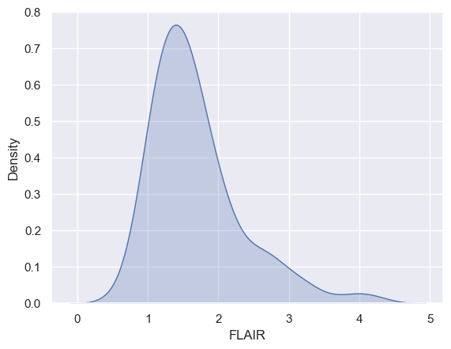
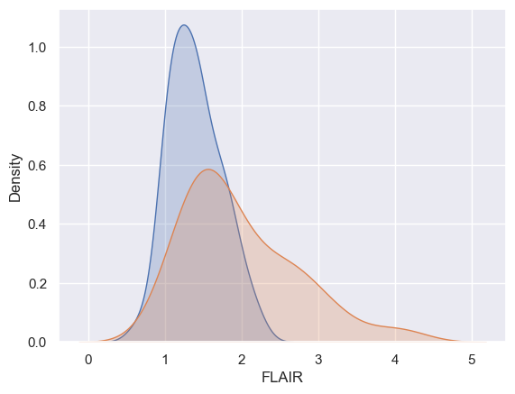
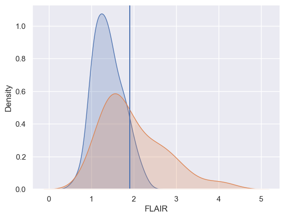

decode#
intro to bc
some notes
jupyter-lab
vscode (not optimal)
differences?
requests, io, warnings
cp python.ipynb ../3.dna.origins/training/chapter7.ipynb
nano ../3.dna.origins/training/_toc.yml
import numpy as np
import pandas as pd
import seaborn as sns
import matplotlib.pyplot as plt
import requests
import io
import warnings
## this sets some style parameters
sns.set()
from sklearn.metrics import accuracy_score, roc_curve, auc
warnings.filterwarnings('ignore')
url = "https://raw.githubusercontent.com/bcaffo/ds4bme_intro/master/data/oasis.csv"
content = requests.get(url).content.decode('utf-8')
dat = pd.read_csv(io.StringIO(content))
dat.head(4)
dat.shape
(100, 13)
dat.groupby('GOLD_Lesions').FLAIR.hist(alpha= .5)
GOLD_Lesions
0 Axes(0.125,0.11;0.775x0.77)
1 Axes(0.125,0.11;0.775x0.77)
Name: FLAIR, dtype: object
x0 = dat.FLAIR[dat.GOLD_Lesions == 0]
x1 = dat.FLAIR[dat.GOLD_Lesions == 1]
x2 = dat.FLAIR
sns.kdeplot(x2, shade = True, label = 'Marginal')
plt.show()
sns.kdeplot(x0, shade = True, label = 'Gold Std = 0')
sns.kdeplot(x1, shade = True, label = 'Gold Std = 1')
plt.show()


x = dat.FLAIR
y = dat.GOLD_Lesions
n = len(x)
trainFraction = .75
## Build a training and testing set
## Prob of being in the train set is trainFraction
sample = np.random.uniform(size = n) < trainFraction
## Get the training and testing sets
xtrain = x[ sample]
ytrain = y[ sample]
xtest = x[~sample]
ytest = y[~sample]
## Starting values, just set it to
## 0 so that it improves on the first
## try
bestAccuracySoFar = 0
for t in np.sort(xtrain):
## Strictly greater than the threshold is
## our algorithm
predictions = (xtrain > t)
accuracy = np.mean(ytrain == predictions)
if (accuracy > bestAccuracySoFar):
bestThresholdSoFar = t
bestAccuracySoFar = accuracy
threshold = bestThresholdSoFar
## Let's test it out on the test set
testPredictions = (xtest > threshold)
## The test set accuracy
testAccuracy = np.mean(testPredictions == ytest)
## Let's see how it specifically does on the
## set of instances where ytest == 0 and ytest == 1
## The % it gets correct on ytest == 0 is called
## the specificity and the percent correct when
## ytest == 1 is called the sensitivity.
sub0 = ytest == 0
sub1 = ytest == 1
testSpec = np.mean(ytest[sub0] == testPredictions[sub0])
testSens = np.mean(ytest[sub1] == testPredictions[sub1])
pd.DataFrame({
'Threshold': threshold,
'Accuracy': testAccuracy,
'Specificity': testSpec,
'Sensitivity': testSens}, index = [0])
| Threshold | Accuracy | Specificity | Sensitivity | |
|---|---|---|---|---|
| 0 | 1.907889 | 0.555556 | 1.0 | 0.294118 |
sns.kdeplot(x0, shade = True, label = 'Gold Std = 0')
sns.kdeplot(x1, shade = True, label = 'Gold Std = 1')
plt.axvline(x=threshold)
plt.show()
